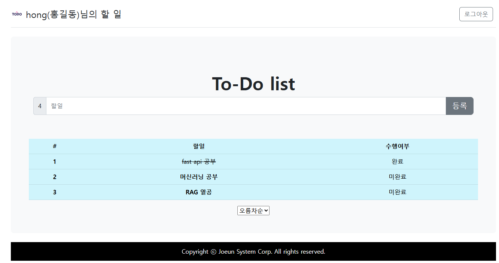

ABOUT ME
홍길동
Hong Gil Dong
LLM · RAG · Data Preprocessing · DL/ML
각자 2줄정도로 본인의 강점을 어필합니다
진짜 강점을 어필합니다.
CONTACT
- gildong@naver.com
- GITHUB
- github.com/4aix
- 위치
- 서울시 관악구
EDUCATION
- 학교
- ○○대학 졸업 (2024.02)컴퓨터정보과
- 수료
- 기업맞춤형 AI-X 융복합 인재양성 과정(KDT)MBC아카데미 · 2026.06–2026.11
EXPERIENCE
- 사무보조
- ○○물류 경영지원팀2024.03–2025.12 · 엑셀 보고서 자동화
SKILLS & TOOLS
PYTHON · DATA
PythonPandasNumPyMatplotlib · SeabornFolium웹 크롤링공공·네이버 Open API
MACHINE LEARNING
scikit-learnEDA · 전처리분류 · 회귀 · 군집변수선택 · 차원축소하이퍼파라미터 탐색불균형 처리앙상블
DEEP LEARNING
TensorFlow · KerasPyTorchDNN · CNNRNN · LSTM · GRUSeq2Seq · AttentionTransformerCallback · 모델 저장
NLP · LLM · RAG
LangChainRAGHugging FaceOllamaOpenAI APIKoNLPy · NLTKStreamlitsLLM 파인튜닝
WEB · BACKEND
FlaskDjangoJinja2Django ORMHTML · CSS · JavaScriptjQuery · Ajax · fetchBootstrap 5
DB · DEPLOY · COLLAB
MySQLGitHubOracleSQL · ERD 설계Git 브랜치 전략AWS 배포
CERTIFICATES & AWARDS
자격·어학
2026.11빅데이터분석기사한국데이터산업진흥원
2026.03정보처리기사한국산업인력공단
2025.09AICE(AI Certificate for Everyone) Associate케이티(KT)
2025.06SQLD한국데이터산업진흥원
수상·활동
2026.11국부펀드 KIC, AI 에이전트 공모전 참여한국투자공사
2026.10차량용 앱 개발 공모전(머신러닝, RGA사용)현대자동차
Flask Todo 서비스
Python + Flask + Vercel
할 일을 기록하고 어디서나 확인하는 앱입니다.
Flask로 만든 할 일 관리 서비스를 Vercel에 배포했습니다.
4명
팀 프로젝트
(1st 프로젝트)
(1st 프로젝트)
4종
HTTP 메서드
GET·POST·PUT·DELETE
GET·POST·PUT·DELETE
1개
실제 배포 서비스
(Vercel · QR 접속)
(Vercel · QR 접속)
- 로그인 시 세션에 사용자 정보 저장 후 목록 화면으로 이동
- 할 일 추가는 POST로 전송, 최신 항목이 위에 오도록 정렬
- 수정·삭제는 PUT, DELETE 요청으로 처리
- 없는 번호로 접근하면 404 안내 화면 표시
- 기간
- 2026.10
- 역할
- 본인 담당 파트 입력 (예: 라우팅·DB 연동)
- 스택
- Python · Flask · Vercel
- GitHub
- github.com/gildong-example/flask-todo
- 배포
- web-flask-orcin.vercel.appVercel
- 발표
- todo-slides.pdf
이 프로젝트에서 배운 점을 한 문장으로 입력

# app.py · 할 일 추가 @app.route('/create', methods=["POST"]) def create(): todo = Todo(content=request.form.get("content")) create_todo(todo) # DB에 저장 return redirect(url_for("todos", order="desc"))
휴대폰 카메라로 찍으면 서비스가 열립니다.
고객상담 말투
LoRA 파인튜닝
Hugging Face + PEFT(LoRA) + Colab T4
공개 상담 대화 데이터로 소형 한국어 모델을 튜닝해,
정중하고 짧은 상담 말투로 답하게 만들었습니다.
1,200건
정제한
질문·답변 쌍
질문·답변 쌍
0.6%
학습한 파라미터
(LoRA r=8)
(LoRA r=8)
4.1/5
말투 적절성
사람 평가 평균
사람 평가 평균
- 중복·욕설·개인정보 포함 대화 필터링
- Instruction 포맷으로 프롬프트 템플릿 통일
- 튜닝 전후 30문항 블라인드 비교 평가
- 학습 손실과 검증 손실을 같이 보며 과적합 확인
- 기간
- 2026.10
- 역할
- 1인 데이터 정제·학습·평가
- 스택
- PyTorch · Transformers · PEFT
- GitHub
- github.com/gildong-example/cs-tone-lora
- 노트북
- cs-tone-lora/lora_finetune.ipynbColab
- 모델
- huggingface.co/gildong-example/cs-tone-lora
학습 데이터 300건을 덜어내자 오히려 말투가 더 일정해졌습니다.
LOSS · EPOCH 1–5
BEFORE / AFTER
배송이 너무 늦어요.
튜닝 전 · 배송 지연은 여러 원인이 있습니다. 첫째, 물류센터의 처리량이…
튜닝 후 · 불편을 드려 죄송합니다. 주문번호를 알려주시면 현재 위치를 바로 확인해 드릴게요.
# LoRA 설정 lora_config = LoraConfig( r=8, lora_alpha=16, target_modules=["q_proj", "v_proj"], lora_dropout=0.05, task_type="CAUSAL_LM", ) # trainable: 0.6% of params
학교 급식
잔반량 예측
Pandas + scikit-learn + Streamlit
메뉴·요일·날씨로 다음 날 잔반량을 예측해,
조리량을 미리 조정할 수 있게 했습니다.
480일
급식 기록
학습 데이터
학습 데이터
11%
랜덤포레스트
MAPE
MAPE
17개
만든 특성
(메뉴 분류 등)
(메뉴 분류 등)
- 메뉴명을 국·주반찬·부반찬으로 분류해 특성화
- 선형회귀·랜덤포레스트·XGBoost 교차검증 비교
- 특성 중요도로 잔반이 많은 메뉴 유형 정리
- 기간
- 2026.07
- 역할
- 전처리·모델 비교 담당
- 스택
- Python · Streamlit
- GitHub
- github.com/team-example/leftover-forecast팀 레포
- 배포
- leftover-forecast.streamlit.appStreamlit Cloud
예측 정확도보다 "언제 틀리는지"를 설명하는 쪽이 현장 설득에 더 중요했습니다.